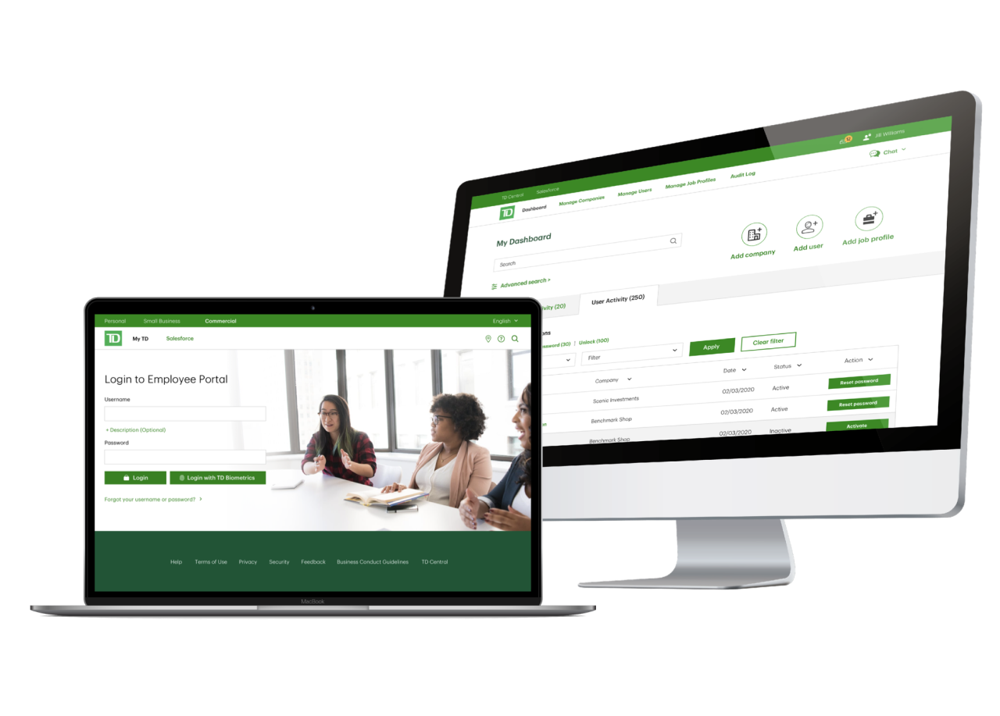
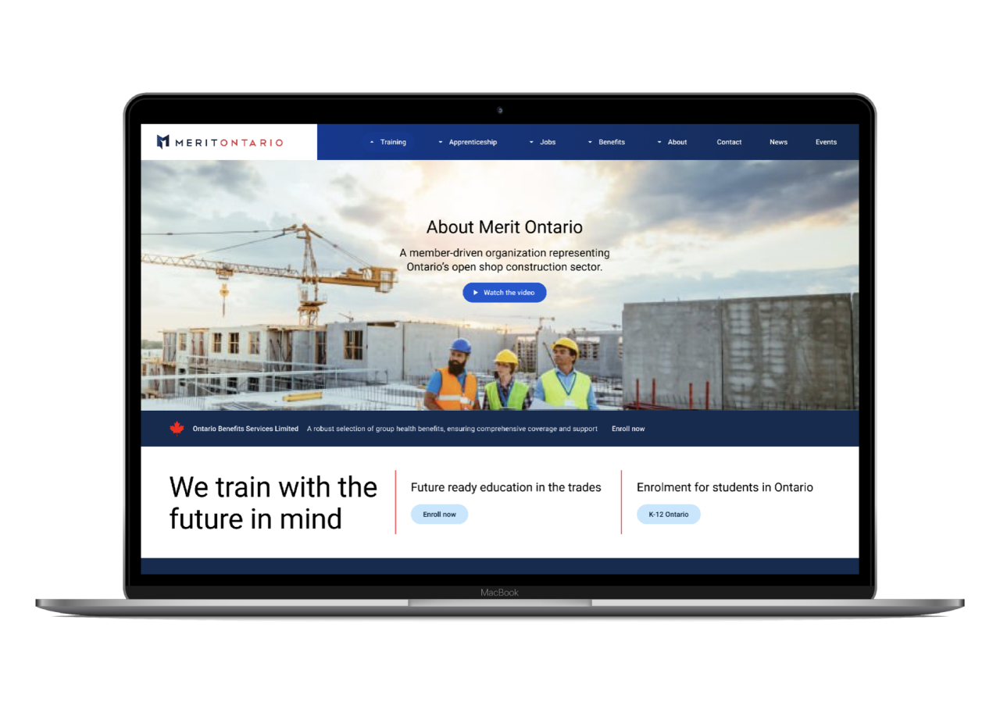
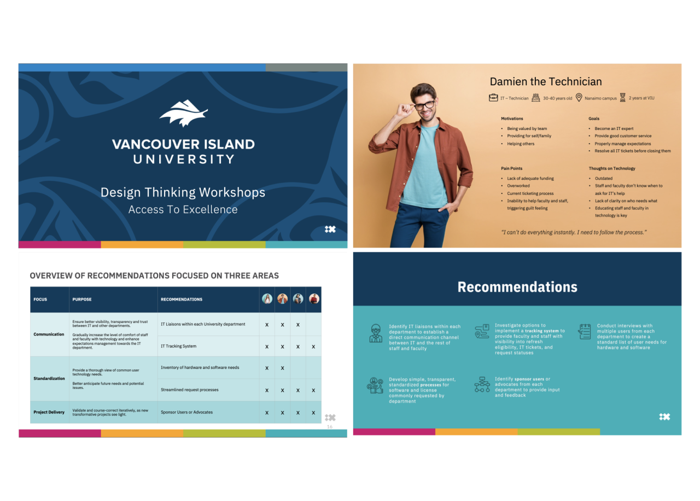
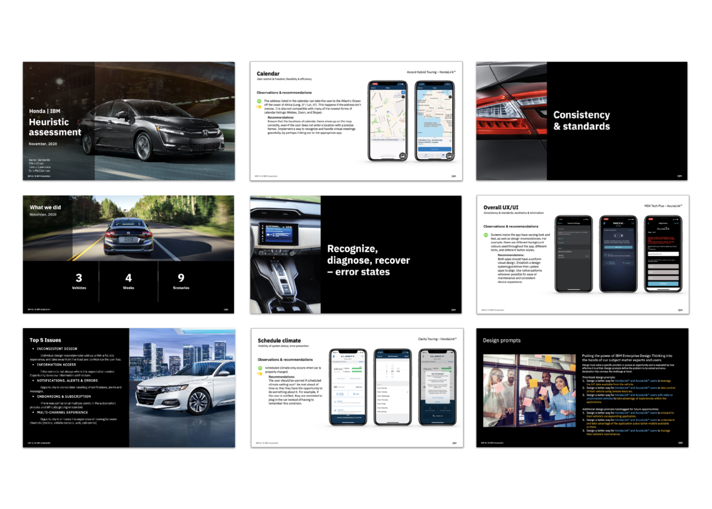
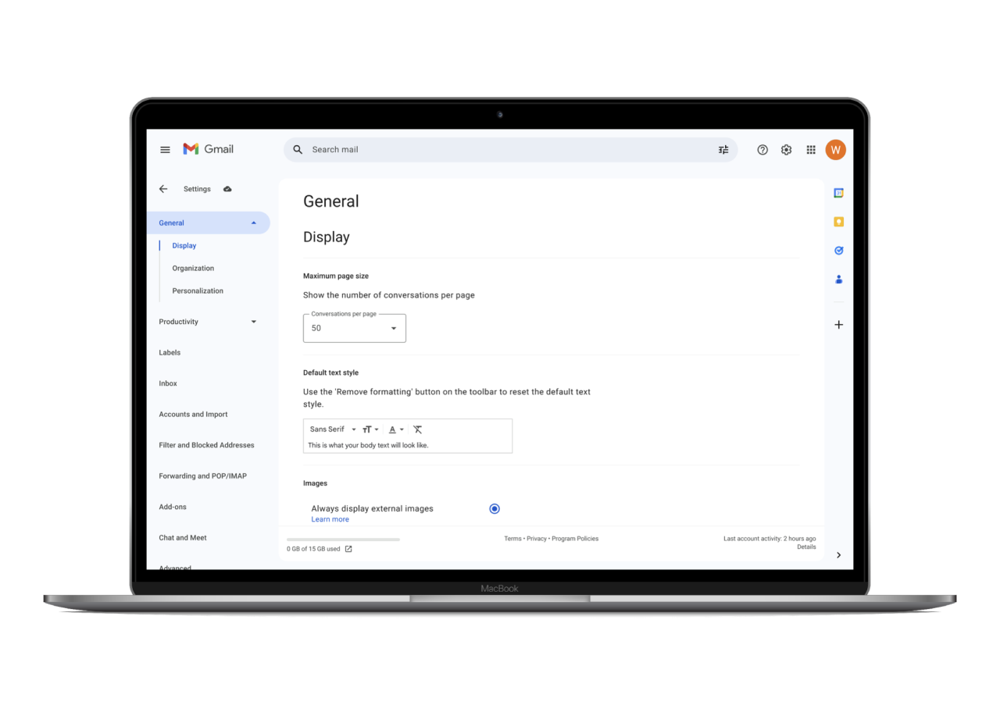
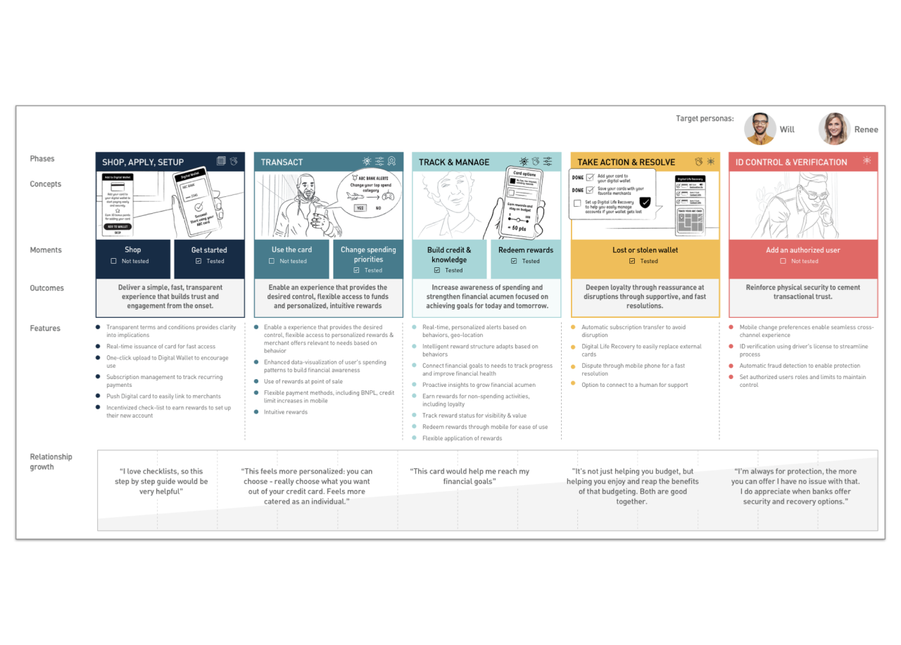

Human-Centred Design
Hello, I am Jenna Lawrence, UX Product Designer
Professional design experience ranging from small to large businesses, private and public organizations, non-profits, and government.

Human-Centred Design
Professional design experience ranging from small to large businesses, private and public organizations, non-profits, and government.


Hands The Family Help Network
This heuristics assessment details actionable research findings, prototypes for AI integrations, highlighted information architecture restructuring with navigational improvements, as well as a branding overhaul. The redesign focused heavily on improving accessibility, streamlined digital access, and ease of navigation for families seeking critical mental health, autism, and developmental support.

Rich Products Corporation
This custom Salesforce experience strategy illustrates a vision for a unified global sales operation across four major business units and 14 geographies. This strategic rollout broke down regional data silos to establish a single source of truth for customer information, enabling seamless cross-geographic account management and unlocking massive cross-selling opportunities across their diverse food portfolio. By standardizing disparate pipelines into a single, cohesive sales process, the company dramatically increased sales team productivity and gained real-time pipeline visibility, which ultimately enhanced global demand forecasting, optimized manufacturing schedules, and streamlined their supply chain.

IBM (International Business Machines)
This feature introduces a centralized repository for common cybersecurity search queries to eliminate repetitive manual workflows. By streamlining the search process and adding a "Saved Searches" capability, we recapture an average of 96 hours per year per analyst. For a small SOC operating at a $56/hour wage, this yields a financial optimization of over $56,000 in reclaimed variable costs, allowing our team to focus heavily on high-impact strategic tasks.

TD Commercial
This work secured a $3M TD Commercial Banking account by driving feature enhancements as part of a high-impact design partnership responding to a competitive RFP.

Merit Ontario
This project optimized the digital platform for a diverse community of construction industry members. By overhauling the information architecture and mapping intuitive user journeys, I built a seamless path that accelerated network growth, supported a 10-trade skilled expansion, and helped unlock $23M+ in provincial funding, simplifying how contractors navigate complex group training and benefit plans.

Vancouver Island University
This initiative delivered a strategic, user-centric transformation of Vancouver Island University’s (VIU) digital ecosystem to modernize and secure institutional endpoint management.

Honda
This project highlighted many usability opportunities in HondaLink and AcuraLink connected-car platforms resulting in a major shift toward system consolidation, enhanced app performance, and transitions to newer underlying technologies.

Redesigning the Gmail settings ecosystem to improve feature adoption and accessibility for everyday users. Through streamlined page layouts, contextual helper text, and in-context auto-saving capabilities, this project removes configuration friction while ensuring seamless compatibility with screen readers like Apple VoiceOver.

PNC Bank
PNC's strategic vision for credit cards maintains the ongoing reputation, conversion and adoption of financial health for PNC Bank customers across the USA. The bank holds its place as one of the largest in the United States, ranking ninth in total assets, and is one of the largest credit card issuers in the United States, with approximately five million credit cards in circulation.

Interested in connecting with me regarding opportunities to work together? Have a quick question only a designer can answer? Connect with me on LinkedIn or send me a quick email.
LinkedIn: /smudgeandcompany
Email: artistjenna@gmail.com